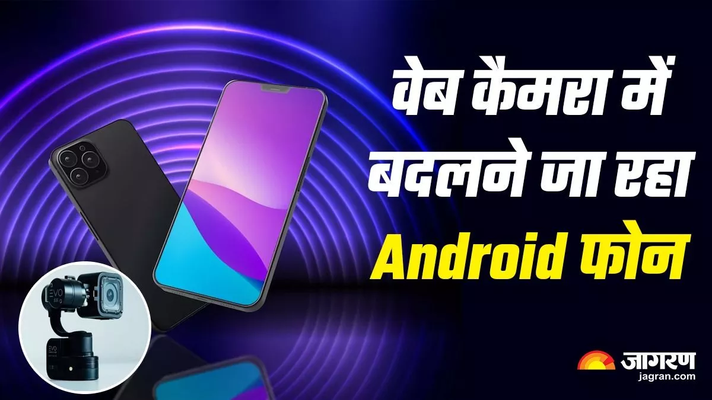

दिनांक: 25 अक्टूबर 2023
एलन मस्क के मैरीनोइड रोबोट (टेस्ला मैरियन रोबोट ऑप्टिमस) को लेकर एक नया वीडियो तेजी से वायरल हो रहा है। इस नवाचार के साथ-साथ, टेस्ला के ह्यूमनॉइड रोबोट ऑप्टिमस का यह वीडियो एक्स हैंडल पर आज ही शेयर किया गया है।
इस वीडियो में, हम एलन मस्क के नवीनतम रोबोट को 'नमस्ते' पॉश्चर के साथ देख सकते हैं, जो एक खूबसूरत और प्रगतिशील कदम है। रोबोट का वीडियो को खुद एलन मस्क ने अपने सोशल मीडिया प्रोफ़ाइल्स पर शेयर किया है, जिससे वह रोबोट की क्षमताओं और टेक्नोलॉजी के माध्यम से लोगों को प्रेरित कर रहे हैं।
टेस्ला के ह्यूमनॉइड रोबोट ऑप्टिमस का यह वीडियो तबादला लाने के प्रयास का भाग है, जो मानवों को नई और उन्नत तकनीक के साथ मिलकर काम करने का एक दृढ़ प्रमोशन है। यह रोबोट न केवल विज्ञान और प्रौद्योगिकी की प्रगति का प्रतीक है, बल्कि यह आगामी समय में कई कार्यों को आसान बना सकता है।
एलन मस्क की इस प्रमोशन के साथ, टेस्ला ने भविष्य में रोबोटिक तकनीक के क्षेत्र में अपनी मौजूदगी को और भी मजबूत किया है, और वह एक उद्घाटन है जिससे आने वाले कुछ अद्वितीय विकासों का संकेत मिलता है।
नई दिल्ली, टेक डेस्क। इस तेजी से वायरल हो रहे वीडियो के साथ, टेस्ला के ह्यूमनॉइड रोबोट ऑप्टिमस के आने वाले समय के लिए साकार होने की उम्मीदें हैं। इसके साथ ही यह एक महत्वपूर्ण कदम है जो मानवता को नई तकनीक के साथ एक कदम आगे बढ़ाने की दिशा में बढ़ावा देने वाला है।
इस वीडियो ने लोगों की आकर्षण और उत्साह को बढ़ा दिया है, और एलन मस्क के नेतृत्व में टेस्ला का नाम एक बार फिर से दुनिया के तकनीकी अद्वितीयता के क्षेत्र में चमका दिया है।
एंड्रॉइड उपयोगकर्ता जल्द ही फोन को वेबकैम के रूप में उपयोग कर सकते हैं। अगर हां तो खुश हो जाओ अब ऐसी करने की जरूरत नहीं होगी। बहुत जल्द नवीनतम टेक्नोलॉजी अपडेट के साथ आपकी ये परेशानी दूर होने जा रही है।नई दिल्ली, टेक डेस्क। क्या आप भी उन स्मार्टफोन यूजर्स में से हैं जो वेब कैमरा के लिए थर्ड पार्टी ऐप्स का इस्तेमाल करते हैं। अगर हां, तो खुश हो जाइए, अब ऐसा करने की जरूरत नहीं होगी।बहुत जल्द लेटेस्ट सॉफ्टवेयर अपडेट के साथ आपकी ये परेशानी दूर होने जा रही है।
दरअसल, हाल ही में पिक्सल डिवाइस के लिए नया बीटा अपडेट ( Android 14 QPR1 Beta 1 update) पेश किया गया है। इस अपडेट के साथ यूजर्स के लिए एंड्रॉइड फीचर लाया गया है।इस एंड्रॉइड फीचर के साथ यूजर्स अपने फोन को वेब कैम में बदल सकेंगे। अच्छी बात ये है कि फोन को वेब कैमरा में बदलने के लिए किसी थर्ड पार्टी ऐप की जरूरत नहीं होगी।लैपटॉप और डेस्कटॉप से यूएसबी केबल के जरिए फोन को कनेक्ट करने के साथ ही फोन वेबकैमरा की तरह इस्तेमाल में लाया जा सकेगा।
नई दिल्ली, खेल डेस्क। क्रिकेट के मैदानों में जमकर हो रहे हैं धमाल।
टीम इंडिया ने विंडीज से बनाई है इतिहास, तीन टेस्ट मैचों की सीरीज में भारतीय टीम ने 3-0 से किया पराजयी।
इससे पहले विंडीज के खिलाफ पहले टेस्ट मैच में भारत ने जीत दर्ज की थी, इसके बाद दूसरे टेस्ट मैच में भी भारत ने विंडीज को हराया और तीनवें टेस्ट मैच में भी दिखाया उनका दम।
नई दिल्ली, पर्यावरण डेस्क। प्रदूषण के मामले में केंद्रीय प्रदूषण नियंत्रण बोर्ड (सीपीसीबी) ने नई दिल्ली और एनसीआर के लिए 'सीआर्टी प्लैन' की घोषणा की है।
इस प्लैन के अंतर्गत बच्चे, वयोमन और बुढ़े लोगों को प्रदूषण से बचाने के लिए कई उपायों की पेशकश की जाएगी, जैसे कि वाहनों के लिए प्रतिबंध, प्रदूषण कम करने के उपाय, और आरोग्य सुधारने के उपाय।
नई दिल्ली, विशेष डेस्क। एक नए रिसर्च रिपोर्ट के अनुसार, विश्व के बड़े शहरों में प्रदूषण के स्तर में कमी आई है।
यह रिपोर्ट बताती है कि यह कमी विभिन्न प्रदूषण नियंत्रण उपायों की वजह से हुई है, जैसे कि गाड़ियों के प्रदूषण मानकों का पालन करना और वन सफाई कार्यक्रमों की वजह से प्रदूषण कम हो रहा है।
भारतीय खिलाड़ियों ने एथलेटिक्स और निशानेबाजी में अपना परचम लहराते हुए भारत की झोली में ढेरों पदक डाले.
बैडमिंटन पुरूष टीम को फाइनल में हार के साथ सिल्वर से संतोष करना पड़ा.
गोल्फर अदिति अशोक ने रजत पदक जीता.
एथलीट अविनाश साबले एशियाई खेलों में पुरुषों की 3000 मीटर स्टीपलचेस स्पर्धा में स्वर्ण पदक जीतने वाले पहले
भारतीय पुरुष बन गए जबकि शॉटपुट में तेजिंदर पाल सिंह तूर ने आखिरी थ्रो पर बाजी मारते हुए अपना खिताब बरकरार
रखा.।
भारतीय गोल्फर अदिति अशोक महिला गोल्फ स्पर्धा के आखिरी दिन अपनी लय बरकरार नहीं रखी सकी और पांच ओवर 77 का निराशाजनक कार्ड खेलकर रजत पदक अपने नाम किया. महिला गोल्फ में ये भारत का पहला पदक है. भारतीय महिला हॉकी टीम को पूल ए के मैच में दक्षिण कोरिया ने 1-1 से ड्रॉ पर रोका हालांकि बेहतर गोल औसत के आधार पर भारतीय टीम अभी भी शीर्ष पर है. अनुभवी ज्योति सुरेखा वेन्नम की अगुआई में कंपाउंड तीरंदाजों ने उम्मीदों पर खरे उतरते हुए एशियाई खेलों में क्वालीफिकेशन में शीर्ष स्थान हासिल किया. महिला और मिश्रित जोड़ी टीम स्पर्धा में शीर्ष वरीयता हासिल की. विश्व चैम्पियन ओजस देवताले और 2014 एशियाड रजत पदक विजेता अभिषेक वर्मा ने तीसरा-चौथा स्थान हासिल किया जिससे भारत ने पुरुष टीम कंपाउंड क्वालीफायर में दूसरी वरीयता प्राप्त की.